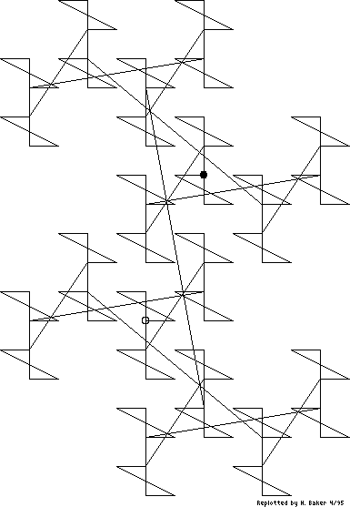

Figure 1(a). [Item 55] This diagram is to substantiate the claim that every Gaussian integer has a unique bit combination. Running through bit combinations 0, 1, 10, 11, ..., the diagram is a map of values, radix i-1. The origin is circled; the dot is at the 127th combination (1111111 = 2 + 5i), which is merely the last point drawn.

Figure 1(a). [Item 55] This diagram is to substantiate the claim that every Gaussian integer has a unique bit combination. Running through bit combinations 0, 1, 10, 11, ..., the diagram is a map of values, radix i-1. The origin is circled; the dot is at the 127th combination (1111111 = 2 + 5i), which is merely the last point drawn.
[Retyped and formatted in html ('Web browser format) by Henry Baker, April, 1995.]